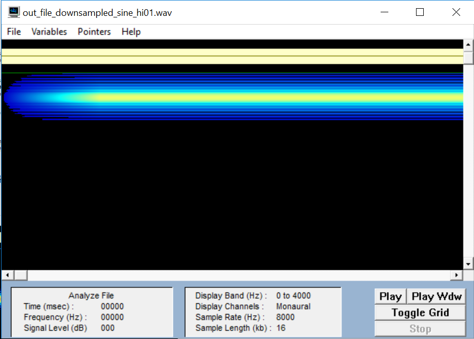
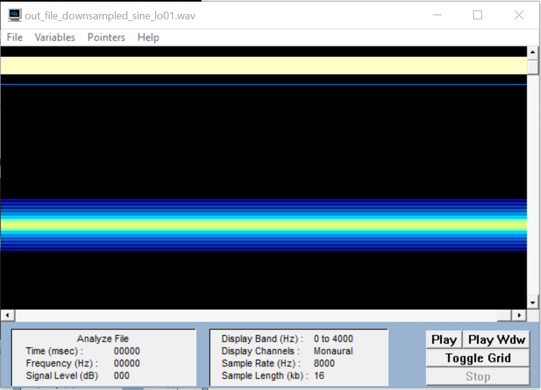
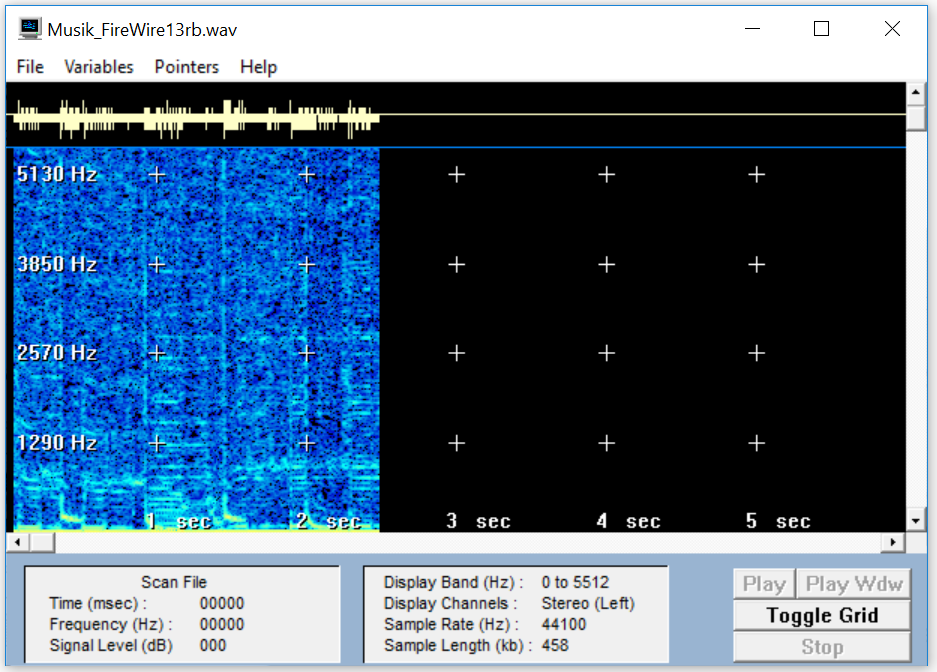

Beschreibung
Gewählte Abtastfrequenz von 44,1 kHz, 16 Bit Auflösung und Stereo
MusikaufnahmeBeschreibung
Gewählte Abtastfrequenz von 44,1 kHz, 16 Bit Auflösung und Stereo
Lösungen:
Angaben im Header: Channels ⇾Kanalzahl (Mono, Stereo)
Frames ⇾Anzahl an Frames in der Audio-Datei
Sample Rate ⇾Samples pro Sekunde
Valid Bits ⇾Bitzahl welche für die Erzeugung verwendet wurde (8, 16)
Bytes per Sample ⇾die Größe eines Samples (Summe aller Kanäle)
Bitrate: Die Bitrate wird berechnet indem man die
Abtastfrequenz mit der Auflösung sowie dem Kanal multipliziert.
44,1 kHz *16 * 2 = 1 411 kHz
Periode der sine_hi01
12665
7723
-15679
Die Frequenz der sine_hi01 hat aufgrund der Werte einer Periode 3,5 Abtastungen. Die Abtastfrequenz wurde laut Aufgabenstellung auf 16000 Herz festgelegt.
f0 = 16000/3,5 = 4571
Die Frequenz der Sinusschwingung von sine_hi01 aus Gram
Periode der sine_lo01
4756
12665
16305
14449
7723
-1606
-10394
-15679
f0 = 16000/8 = 2000
Die Frequenz der Sinusschwingung von sine_lo01 aus Gram
Das Verfahren zur Vermeidung von Aliasing, auf Soundkarten bezeichnet man als „idealer Tiefpass“. Dieses Verfahren beschreibt eine Funktion, die durch eine Grenzfrequenz B einen Filter besitzt, die nur Frequenzen hindurchlässt die unter der Grenzfrequenz liegen. Alles was größer ist wird blockiert. Diesen „idealen Tiefpass“ gibt es allerdings nur in der Theorie. In der Praxis kann der „ideale Tiefpass“ auf Grund von unendlich langen Impulsantworten nicht erreicht werden. Der „reale Tiefpass“ kann annähernd an den „idealen Tiefpass“ mit der Formel: H(f) = rect(f/2B) berechnet werden. B – Grenzfrequenz f – Frequenz rect - Rechtecksfunktion
Downsampled Sine_hi01
Downsampled Sine_lo01
bei sine_hi01 hat sich die Frequenz auf ca. 3 kHz verringert. Bei sine_lo01 auf 1,5 kHz.
Würde man eine Bandbegrenzung einbauen würden alle hohen Frequenzen herausgefiltert werden und somit das Abtasttheorem eingehalten werden. Folglich würde kein Aliasing-Effekt entstehen

Sprache 10Bit Verlust
bei 10 Bit Reduzierung, hat die Qualitaet schon abgenommen,
aber es ist noch zu verstehen was gesagt wird.

Sprache 12Bit Verlust
Bei 12 Bit Reduzierung hat die Tonqualitaet so stark abgenommen,
dass nicht mehr wirklich verständlich ist was gesagt wird.

Musik 13Bit Verlust
Bei 13 Bit Reduzierung bemerkt man dass die Musikqualitaet abnimmt, aber es ist noch nicht sehr schlimm.
Musik 15Bit Verlust
Bei 15 Bit Reduzierung ist die Verschlechterung deutlich
zu hören und das Rauschen und Knistern überwiegt die Musik.
Sine_hi01 Quantisiert
Sine_lo01 Quantisiert